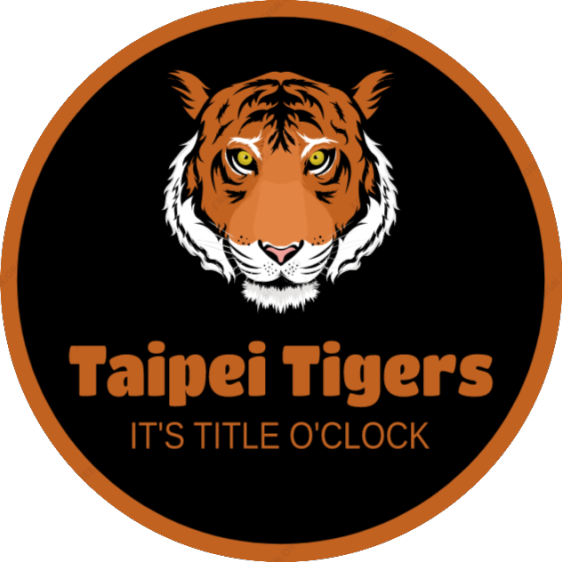

EKIPE
Jošt Mrdavšič Taipei Tigers

Team owner: Jošt Mrdavšič
Joined league: 2017 (season 1)
History:
Team JOLE (seasons 1-4)
Na vrh Brda vrba Mrda (season 5)
Arena: Taipei Arena
Capacity: 15.000
Location: Taipei, Tajvan
Average ranking: 5.14 (4th)
| Sezona | Uvrstitev |
|---|---|
| 2017/18 | 1 |
| 2018/19 | 7 |
| 2019/20 | 3 |
| 2020/21 | 4 |
| 2021/22 | 7 |
| 2022/23 | 12 |
| 2023/24 | 2 |
| 2024/25 | ... |
| AVERAGE | 5.14 |
Intervju - JOŠT MRDAVŠIČ (september, 2024)
Pozdravljeni dragi člani fantasy koroška! Danes se vam ne javlja naš dragi Jošt, saj je on na tapeti, da opravi intervju! Pa da vidimo, kaj nam je imel prvi kladioničar Janeč za povedati.
1) Kdo mislite, da vam bo letos sunil Georga in kaj mu sporočate ob tej priložnosti?
Seveda si želimo, da nihče. Če pa bi moral izbrati glavne kandidate za kaj takega pa bi najbrž moral biti eden izmed bratov Tatitčnik. Matevž vedno znova dokazuje, da »oproščen-najemnine« živim v njegovi glavi.
Zdaj, ko ima že ustaljeno marioneto v obliki brata Tineta pa ima za krajo še več možnosti. Na tej točki nimam posebnega sporočila, če pa bi ga imel, bi najbrž bil v tem družinsko-prijaznemu časopisu zapisan s samimi zvezdicami.
2) Lanska sezona je bila zelo uspešna, poleg dominantnega rednega dela se je končno poklopilo tudi za finale, a vas je tam ustavil Podlesnik. Komentar?
V zadnjem intervjuju davnega leta 2022 smo napovedali samo še boljše predstave in se tega tudi držali. Nobena skrivnost ni, da smo lani imeli daleč najmočnejšo ekipo, a se je SGA odločil oditi na dopust prav v finalu. Nemogoče je, da bi Podlesnik
imel še eno tako brezskbrno sezono z 0 poškodbami, zato nas v tej sezoni zanj ne skrbi, je pa vsekakor bil glavni posranec pretekle. Drugo mesto je lep dosežek, a vendar pušča prostor za napredek - titulo letos kakopak.
3) Že 8 sezon je od kar ste ustanovili tole "prijateljsko" fantasy ligo. Kaj menite o trenutni situaciji?
Ja leta 2017 si gotovo nisem mislil, da se bo zadeva tako razširila. Zdaj je poleg samega fantasyja še OGROMNO contenta, poleg zdaj že ustaljenega piknika in predictionov smo letos dodali še spletno stran. Vsekakor mi je LM-anje te lige in ustvarjanje
vsega ostalega contenta v veliko veselje in bom s tem nadaljeval kolikor dolgo mi bo le dopuščal čas in bo seveda za to obstajal interes. Bi pa dejal glede na to, da se je liga razširila na 16 ekip in da imamo v čakalni vrsti vedno znova nove ljudi,
verjamem da je liga še vedno v vzponu in ne v zatonu, zato me za prihodnost nikakor ne skrbi.
Zaključna misel
Mislim da rezultati pričajo o tem da Tigri rjovemo iz sezone v sezono bolj in vas na to ni treba opominjati. Kot bi rekel priljubljeni reper Grše: "Mene zanima zlato, mene ne briga bronza" ... to velja tudi za nas in letos je čas za zasluženo lovoriko številka 2.